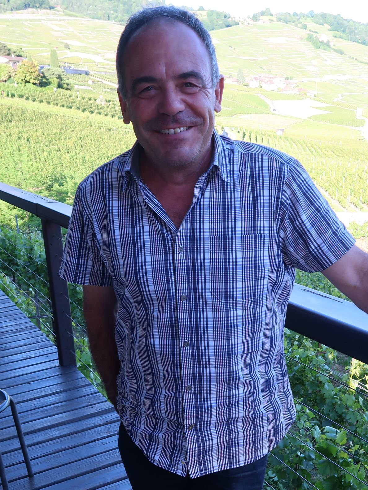

le vigneron
un type très sympa à l’allure de vigneron et très accueillant tout comme sa terrasse qui plonge sur le lac et le village de cully ou son carnotzet qui te permet de te concentrer sur le vin et non sur le paysage certes magnifique
de jean-luc blondel
ses proches disent de lui qu’on sait qu’il existe, mais qu’on ne le voit pas comme l’autre, tant le temps lui manque pour faire tout ce qu’il a à faire en courant tout le temps bien que secondé par son épouse francine et son fils louis
c’est que c’est un amoureux fou du chasselas et que ce dernier le lui rend bien
déguster
villette champ-noé 2016
si comme jean-luc tu veux tomber amoureux du chasselas, bois cette potion qui a un goût de reviens-y
à l’apéro même sans avoir soif ou avec des filets de perches au citron vert et cinq-épices
épesses la perle 2016
t’as plein la bouche de fruits et de soleil, un régal et un apéritif réussi à coup sûr
calamin blanc l’arpège 2016
oh lala, ça c’est quelque chose, une réussite et qui attendra facilement que t’aies fini le 2015 ! un calamin jouissif
ce nectar appréciera un saucisson de volaille aux poireaux et curry
dézaley blanc côtes des abbayes 2016
une explosion de saveurs, excellent avec un saumon aux lentilles à l’aigre-doux
épesses rosé la ronde 2016
bien en bouche, enchanteur et festif qui te fera vite oublier le temps maussade et la pluie
découvrir
son dézaley prestige blanc 2015
élevé en cuve ovoïde (genre amphore) qui donnera un faste particulier aux événements marquants de ta vie (seulement en 70 cl)
et pour le fun
sa dôle d’épesses, surprenante appellation pour un vaudois !
il faut savoir que ce vin provient d’un cépage cultivé à épesses depuis plus de cent cinquante ans, soit avant que l’appellation « dôle du valais » apparaisse
mais y en a point comme nous
qui ?
Domaine Blondel
Jean-Luc et Louis Blondel
Chemin du Vigny 12
1096 Cully
021 799 31 92 - info@domaine-blondel.ch - www.domaine-blondel
y aller
à la sortie de lausanne, en direction de vevey prends la sortie cully
va jusqu’au giratoire et tourne à gauche pour aller à la gare
juste après avoir passé sous le pont cé-ef-ef, mais juste après prends à droite la route qui est interdite aux véhicules, sauf pour le domaine
tu longes les rails puis une sacré grimpée qui t’amène entre d’épais murs de vigne jusqu’au domaine blondel
le resto
Café de Riex
Peter Hasler
Route de la Corniche 24
1097 Riex – 021 799 13 06 - www.cafe-de-riex.ch
sympa
tu peux également acheter des raisins à la lie faits maison